.
Atmospheric Dispersion Corrector
.
defect
01-10-2022
|
Dawniej ADC stanowił wyposażenie zarezerwowane jedynie dla profesjonalistów, obecnie dostępnych jest wiele wersji tego urządzenia w przystępnej cenie i przyzwoitej jakości. Należy jednak wiedzieć, że mimo zastosowania przez producentów dobrej jakości optyki i mechaniki, zdarzają się egzemplarze, w których oś pryzmatów nie pokrywa się z osią dźwigni regulacyjnych. Posiadacz takiego urządzenia, próbując zrozumieć zasadę jego działania, ustawia wszytko zgodnie z instrukcją, jednak obserwowane na ekranie monitora efekty nie są zgodne z oczekiwaniami, powodując konsternację użytkownika. Teoretycznie pozycja neutralna przyrządu przybiera poniższy układ dźwigni. (zielona linia - linia horyzontu) . 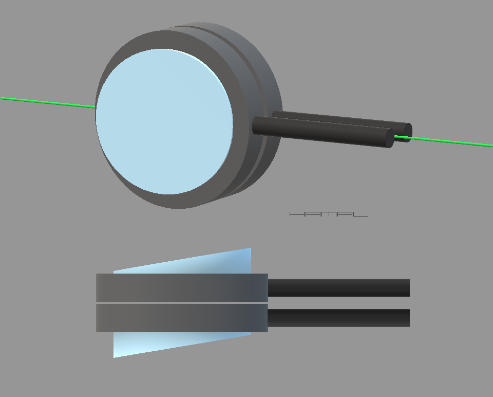 Teoretycznie pozycja maksymalna przyrządu przybiera poniższy układ dźwigni. (zielona linia - linia horyzontu) . 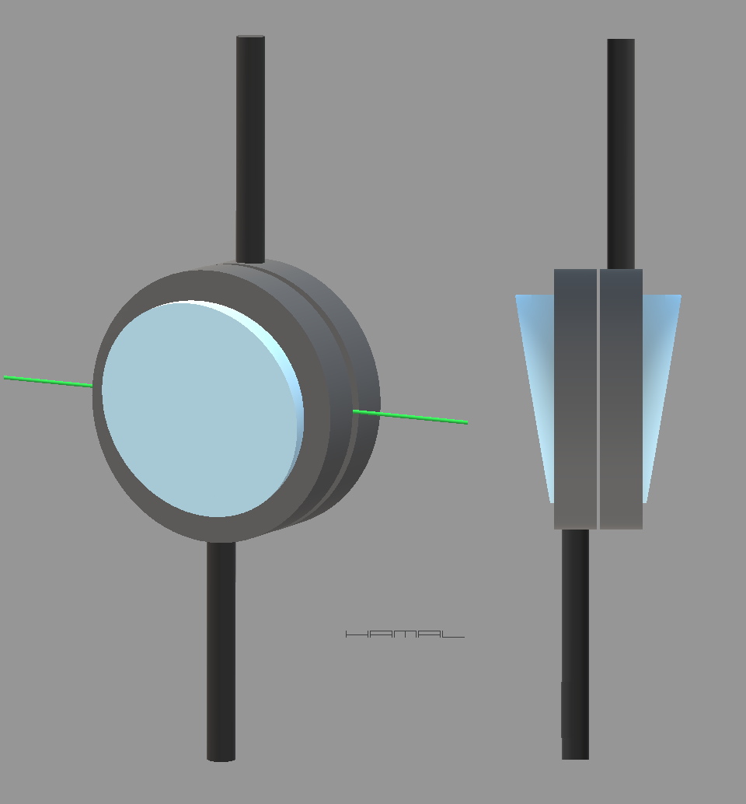 Jednak w praktyce, potrafią one przybierać przeróżne układy, zależnie od błędu wklejenia pryzmatów. Trafiłem na egzemplarz, w którym łączna suma błędów wynosiła 80°, więc aby pryzmaty ustawić w pozycji korekty neutralnej, jedna dźwignia musiała być skorygowana o 35° względem teoretycznego położenia neutralnego w jedną stronę, a druga dźwignia musiała być skorygowana o 45° względem teoretycznego położenia neutralnego w drugą stronę, nieszczęśliwie w takich kierunkach, że brakło rowków w korpusie obudowy, ponieważ łączny zapas w tych kierunkach wynosi 60° (po 30° w każdą stronę). . 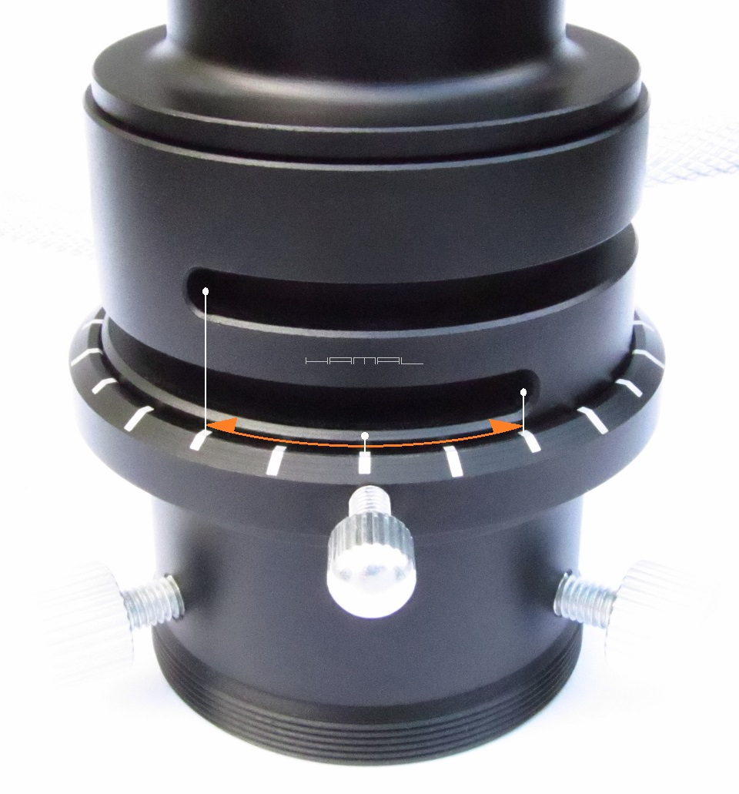 To pokazuje, jak taka wada urządzenia, utrudnia potem prawidłowe użytkowanie. Nieświadomy niczego właściciel przyrządu może mieć problem ze zrozumieniem, gdzie popełnia błąd, skoro wszystko wykonuje zgodnie z instrukcją, a uzyskiwane efekty nie odzwierciedlają tego, co powinien otrzymać. On tak naprawdę wszystko wykonuje prawidłowo, lecz wadliwe urządzenie fałszuje wyniki. Rozwiązaniem problemu w tym przypadku, okazało się przerobienie przyrządu na model symetryczny (dźwignie regulacyjne wkręcone w pierścienie od grubszej strony pryzmatów - pozycja maksymalna znajduje się wtedy u góry), dopiero taka modyfikacja pozwoliła na uzyskanie korekcji neutralnej. Aby zgodnie z zamysłem producenta i instrukcją, pozycja neutralna ADC, występowała w takiej pozycji dźwigni... . 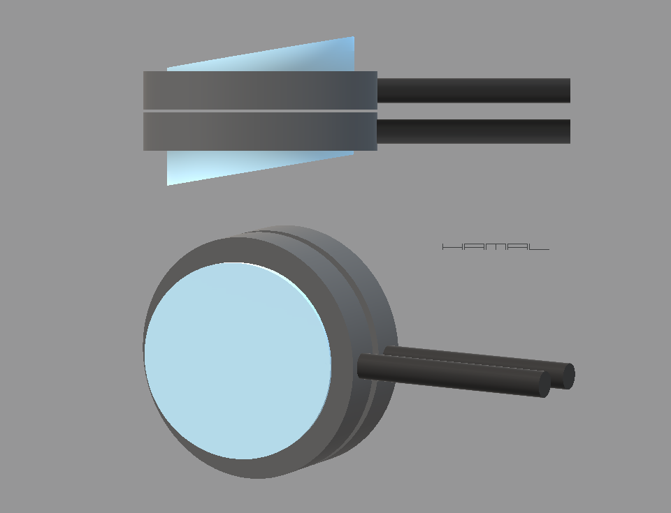 ...to pryzmaty muszą zostać wklejone względem dźwigni regulacyjnych w zaprezentowanej poniżej pozycji (w osi)... . 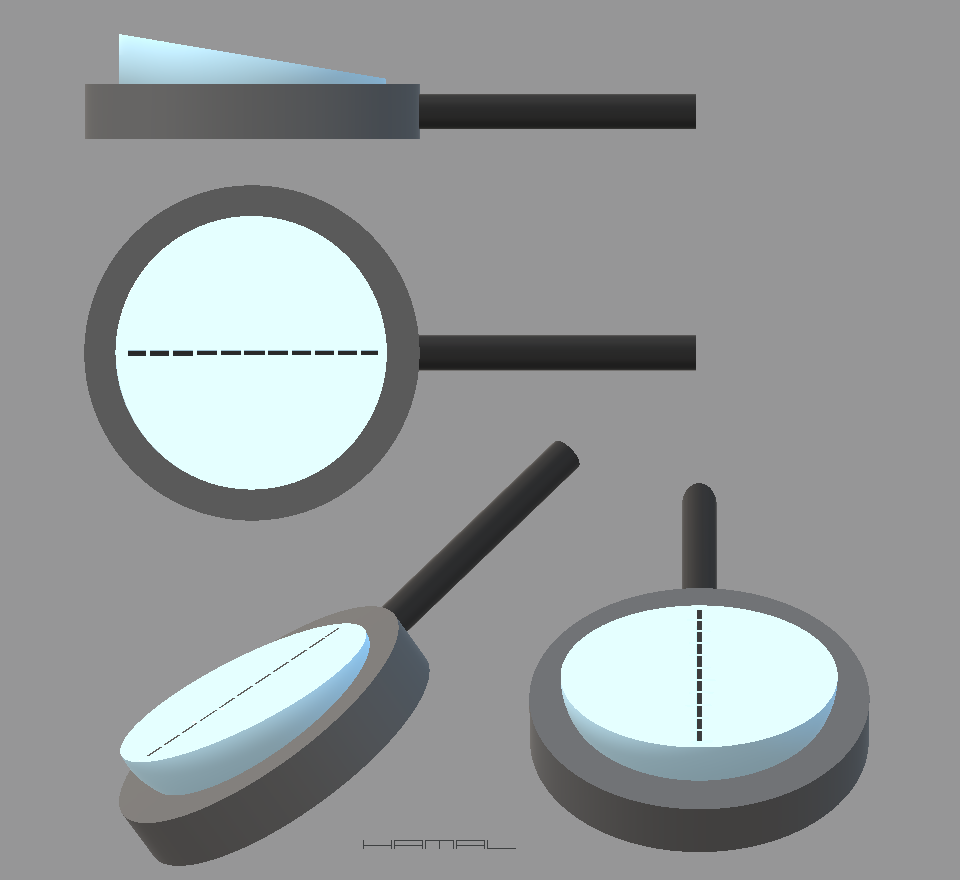 Przerywana linia symbolizuje oś symetrii pryzmatu. ...drugi zestaw... . 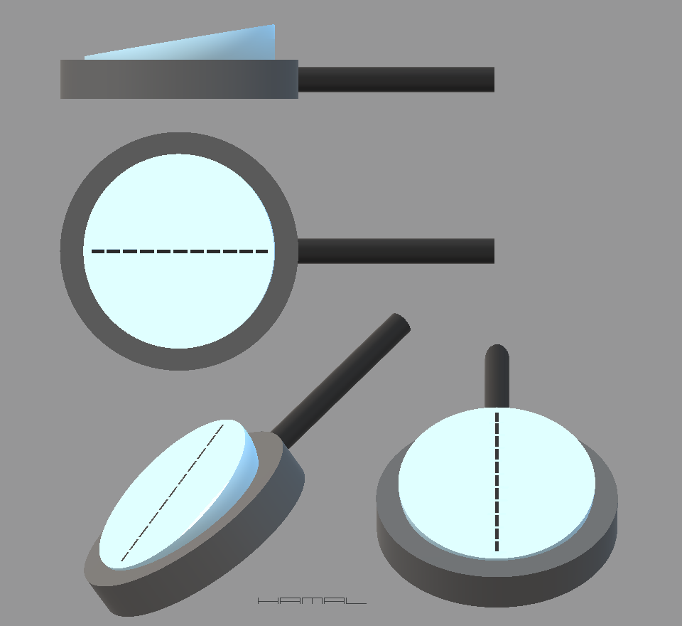 Przerywana linia symbolizuje oś symetrii pryzmatu. ...wtedy pozycja neutralna dźwigni regulacyjnych i pary pryzmatów wygląda jak poniżej. . 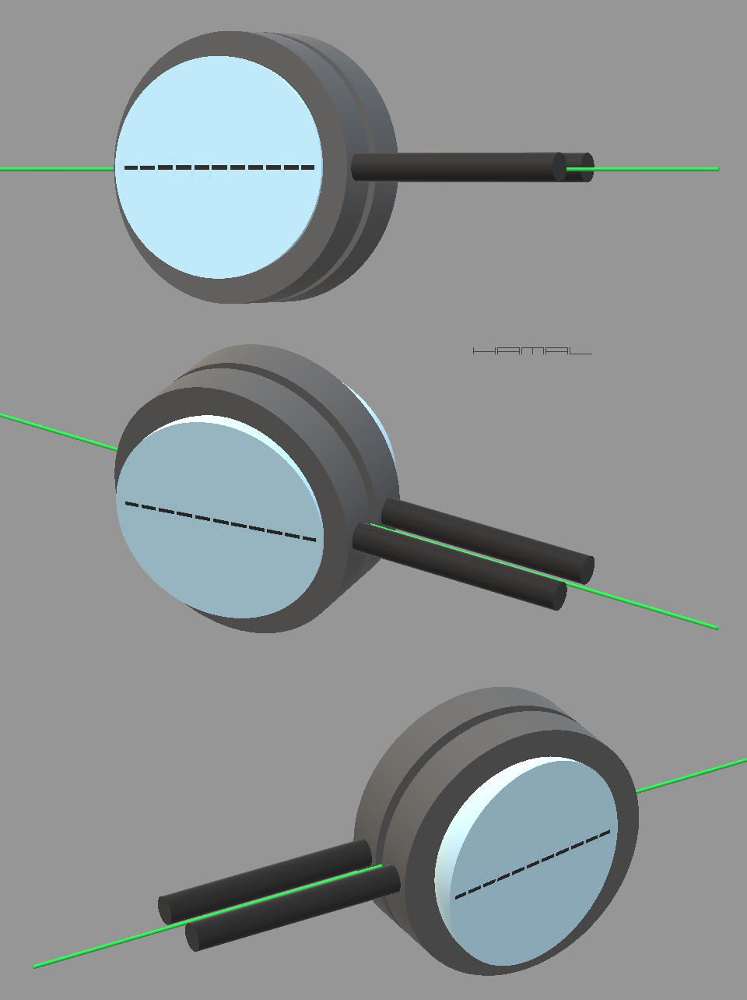 Przerywana linia symbolizuje oś symetrii pryzmatu. Niestety, niedokładność wklejenia pryzmatów w czasie produkcji sprawia, iż znajdują się czasem w takiej pozycji względem dźwigni regulacyjnych... . 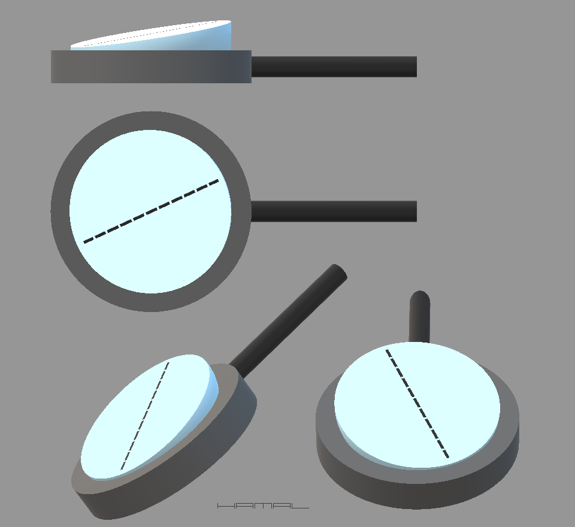 Przerywana linia symbolizuje oś symetrii pryzmatu. ...lub takiej pozycji, drugi zestaw... . 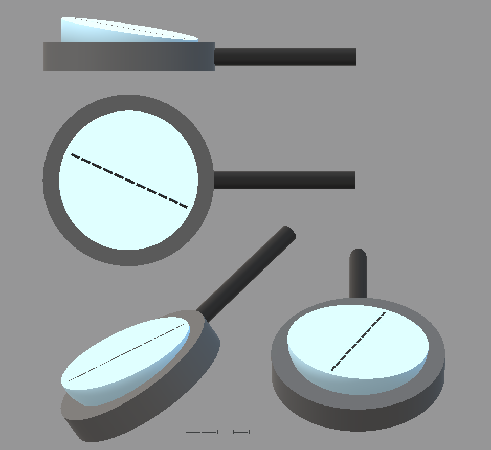 Przerywana linia symbolizuje oś symetrii pryzmatu. ...co sprawia, że nastawienie dźwigni regulacyjnych zgodnie z instrukcją, ustawi nam pryzmaty w nieprawidłowym położeniu. . 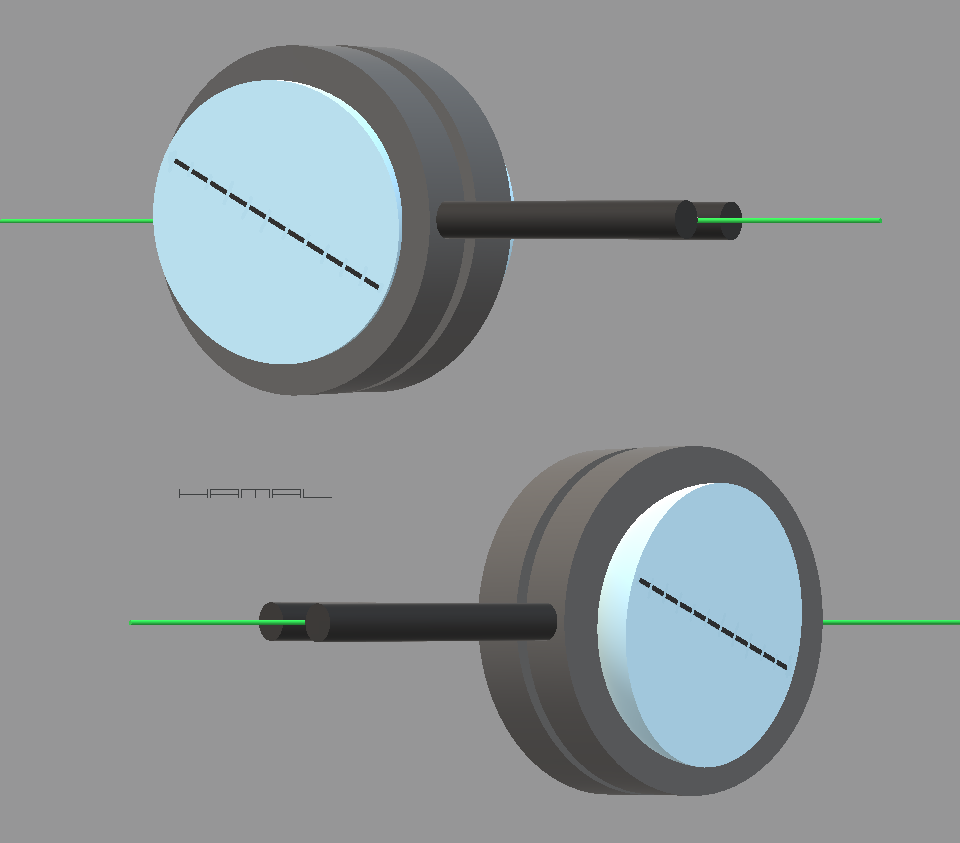 Przerywana linia symbolizuje oś symetrii pryzmatu. Można oczywiście ustawić całość zgodnie z osiami pryzmatów, jednak wtedy dźwignie regulacyjne nie będą ustawione zgodnie z zaleceniami. . 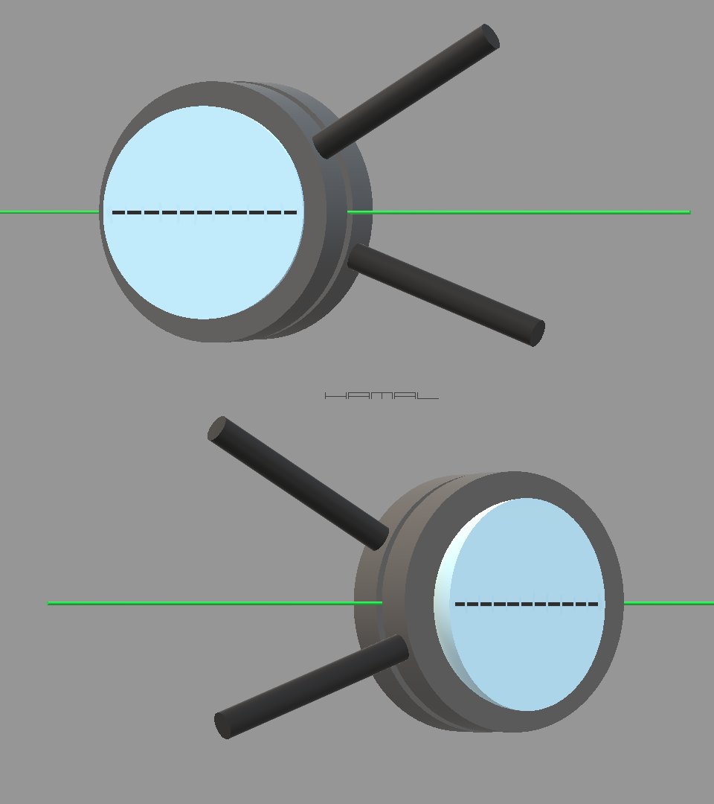 Przerywana linia symbolizuje oś symetrii pryzmatu. Wszystko to powinno być znane i brane pod uwagę podczas korzystania z przyrządu, aby uniknąć niepotrzebnej frustracji i nie szukać błędów w swoim postępowaniu. W tym momencie każdy zadaje sobie pytanie, czy jego przyrząd posiada prawidłowo osadzone pryzmaty. Wstępnego rozeznania można dokonać, obserwując przez szczeliny w obudowie, jak przebiegają skosy pryzmatów oraz jakie jest ich położenie względem dźwigni, ale można również zrobić to inaczej, w tym celu wystarczy posiadać laser kieszonkowy. Kładziemy włączony laser tak, aby świecił na ścianę, a przed laserem, w wiązce jego promieni, umieszczamy nasz korektor dyspersji atmosferycznej. Zaczniemy od ustawienia dźwigni na pozycję neutralną zgodnie z instrukcją. . 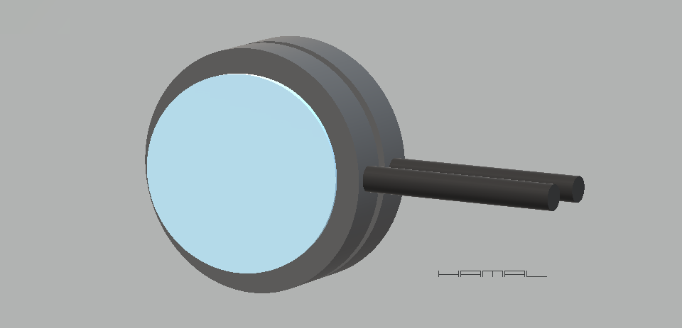 Jeśli pryzmaty, przy tym ustawieniu, są faktycznie dobrze ze sobą zgrane, wtedy plamka lasera na ścianie w chwili umieszczenia na jej drodze naszego ADC przemieści się jedynie nieznacznie. 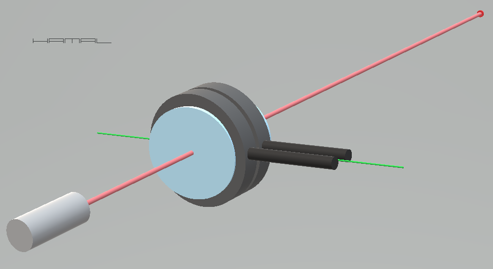 Jeśli natomiast, w badanym przyrządzie pryzmaty względem dźwigni regulacyjnych zostały wklejone krzywo, to plamka lasera na ścianie dokona większego przemieszczenia. W tym momencie można zacząć poszukiwać prawdziwego ustawienia neutralnego, poprzez drobne przemieszczanie dźwigni, do momentu, aż plamka lasera na ścianie będzie praktycznie nieruchoma (w czasie gdy w wiązce lasera umieszczamy i usuwamy nasz ADC) . Może się okazać, że wymaga to pozycji dźwigni regulacyjnych zaprezentowanych poniżej. . 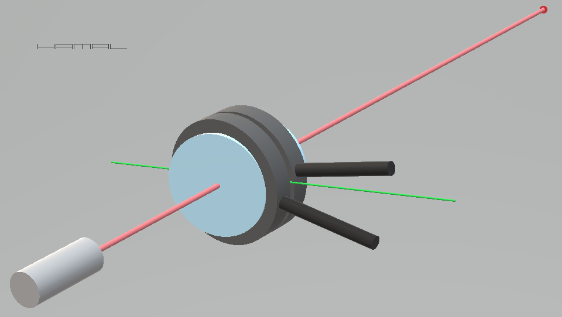 lub takich... . 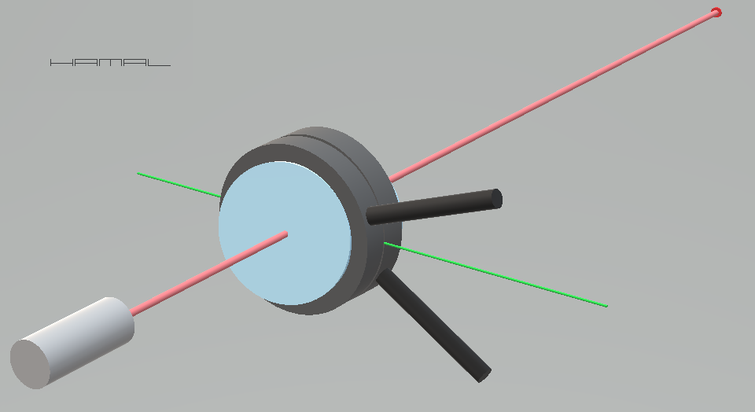 Można uznać, że korekta minimalna nie jest nam przecież niezbędna, nas interesują planety tuż nad horyzontem, a tu pracujemy w obrębie korekty maksymalnej, więc brak możliwości ustawienia korekty minimalnej, można teoretycznie zignorować. Jednak, gdy w konsekwencji przytaczanych tu wad, pojawi się brak możliwości uzyskania korekty maksymalnej, może to dyskwalifikować nasz przyrząd jako sprawny i użyteczny. Poszukiwanie rzeczywistego ustawienia korekty maksymalnej. Po znalezieniu pozycji korekcji minimalnej lub najbardziej do niej zbliżonej umieszczamy nasz ADC w wiązce lasera i przesuwamy pierwszą dźwignię do momentu, aż plamka lasera, rysując na ścianie łuk, osiągnie maksymalne wznoszenie i zacznie opadać, potem robimy dokładnie to samo z drugą dźwignią, z tą różnicą, że plamka w tym przypadku, będzie się przemieszczać w drugą stronę. Ustawienie obu dźwigni w pozycji, w której plamki lasera dokonały maksymalnego wznoszenia, oznacza, że są one, ustawione w naszym przyrządzie w pozycji korekty maksymalnej, niezależnie od pozycji dźwigni. Plamka lasera (na ścianie) będzie dokonywała maksymalnego przeskoku, przy umieszczaniu i usuwaniu naszego przyrządu z wiązki lasera. . 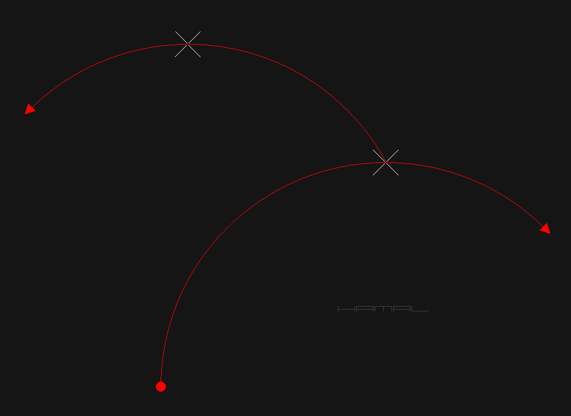 Jeśli nasz przyrząd, z powodu wadliwego osadzenia pryzmatów, oraz w wyniku ograniczonego zakresu pracy dźwigni regulacyjnych, nie jest w stanie uzyskać w obu przypadkach momentu opadania plamki lasera, oznacza to tyle, że nie jesteśmy w stanie naszym przyrządem, uzyskać korekty maksymalnej. O ile brak możliwości uzyskania korekcji minimalnej nie jest dla nas aż tak dotkliwy, mało kto stosuje ADC prawie w zenicie, to brak uzyskania korekcji maksymalnej, i jej okolic, przy niskich wysokościach fotografowanych planet, może dyskwalifikować nasze urządzenie jako sprawne wyposażenie astrofotografa. Podsumowując :) ADC czyni cuda, skorygowany obraz księżyców Jowisza wprawia w zachwyt, jednak ucząc się przyrządu, należy wziąć pod uwagę przytoczone powyżej informacje. Warto go używać po uprzednim doświadczalnym zbadaniu laserem lub pod nocnym niebem, bo można się rozczarować, polegając jedynie na podziałce, dźwigniach regulacyjnych i instrukcji. . Opisana tu wada dotyczy zazwyczaj przyrządów bez logo znanego producenta, możliwe, że stanowi egzemplarze, które nie przeszły kontroli jakości, niemniej jednak warto zdawać sobie sprawę z istnienia niniejszego zagadnienia i być przygotowanym pod tym kątem. 
|